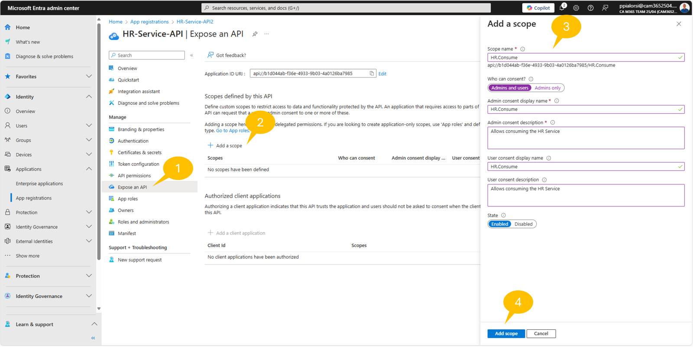
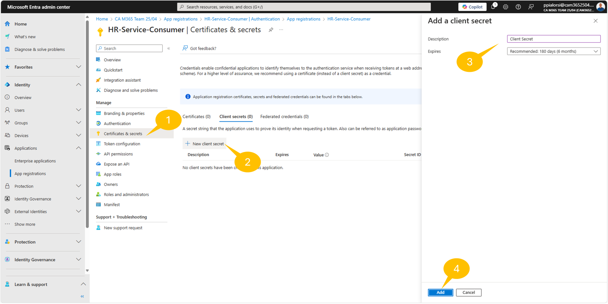
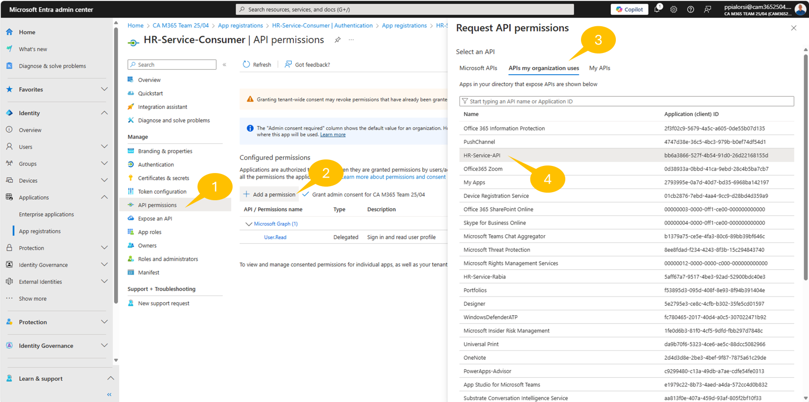
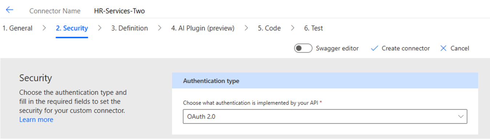
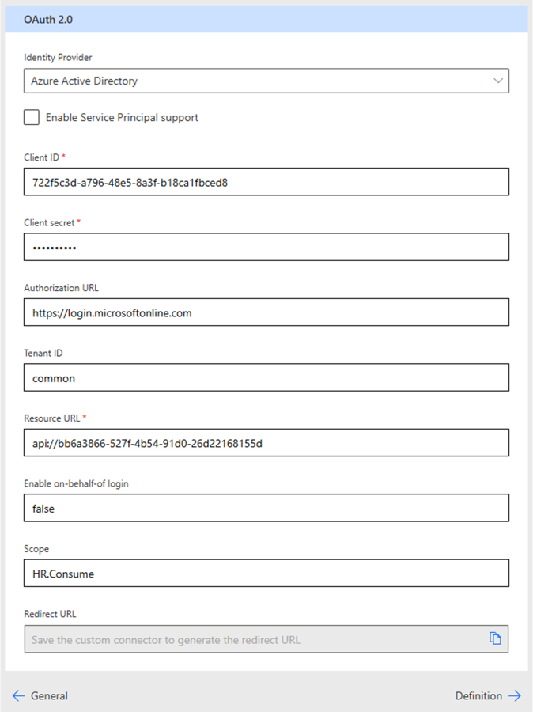
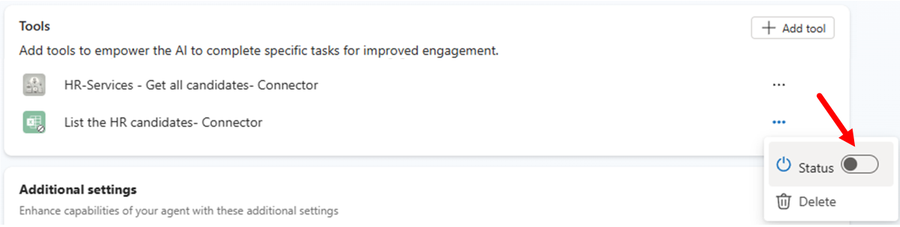

ラボ MCS5 - Power Platform カスタム コネクタ
このラボでは、 Copilot Studio で作成した エージェント を Power Platform のカスタム コネクタで拡張する方法を学習します。具体的には、 REST API を利用して、仮想的な求人候補者リストを管理します。 API では次の機能が提供されています。
- 候補者を一覧表示
- 特定の候補者を取得
- 新しい候補者を追加
- 候補者を削除
Microsoft Copilot Studio でエージェントを構築したい場合は、次のラボを実施してください
Microsoft 365 Copilot では、 Copilot Studio 内でこれらの機能を活用し、前回の Lab MCS4 で作成したカスタム エージェントの拡張性を高めることができます。
Note
このラボは前回の Lab MCS4 を基盤としています。同じエージェントを継続して使用し、新しい機能を追加していきます。
このラボで学ぶ内容:
- REST API を Power Platform のカスタム コネクタとして公開する方法
- Power Platform で外部 REST API との通信をセキュリティ保護する方法
- エージェント からカスタム コネクタを利用する方法
Exercise 1 : REST API の作成
簡潔にするため、このラボではあらかじめ用意された REST API を使用します。この演習では、 API をダウンロードしてローカル環境で実行できるように設定します。
Step 1: REST API のダウンロードとテスト
サンプル REST API は TypeScript と Node.js で構築された Azure Function で、名前は HR Service です。ソース コードは こちら からダウンロードできます。
ZIP を展開し、対象フォルダーを Visual Studio Code で開きます。下図はプロジェクト構成の概要です。

主な要素は次のとおりです。
http: REST API をテストする .http ファイルが 2 つ含まれています。src/data/candidates.json: 初期データ ソースとして使用される仮想的な候補者リスト。src/functions/candidatesFunction.ts: Azure Function の実装。src/openapi.json: OpenAPI 仕様（JSON 形式）。src/openapi.yaml: OpenAPI 仕様（Yaml 形式）。askCandidateData.json: 新しい候補者のデータを収集するアダプティブ カードの JSON。dev-tunnel-steps.md: ローカルで実行している REST API 用のリバース プロキシを構成する Dev Tunnel の手順。local.settings.json.sample: 後で使用するサンプル設定ファイル。
local.settings.json.sample を local.settings.json にリネームし、F5 キーでプロジェクトを起動します。 Visual Studio Code で http/ht-service.http を開き、http://localhost:7071/api/candidates の GET 要求横にある Send request を選択して候補者リストを取得します。
右側にレスポンス ヘッダーと JSON 形式の候補者リストが表示されます。

画面下部の Terminal には API 呼び出しのトレースが表示され、OAuth is disabled. Skipping token validation というメッセージが確認できます。つまり現在 API は匿名アクセス可能です。
Step 2: Entra ID での API 登録
次に API へのアクセスを保護します。ブラウザーで https://entra.microsoft.com を開き、対象テナントの業務アカウントでサインインします。 1️⃣ 左メニューの App registrations を選択し、2️⃣ + New registration をクリックして新しいアプリケーションを登録します。

Register an application ページでアプリ名を HR-Service-API とし、単一テナント認証を選び、画面下部の Register をクリックします。

登録が完了すると Overview ページが表示されます。 Client ID と Tenant ID をコピーしておきます。
1️⃣ 左メニューの Expose an API を選択し、2️⃣ + Add a scope を選びます。最初のスコープ追加時には Application ID URI を設定する必要があります。既定値 api://<Client-Id> を Save and continue で保存します。次に 3️⃣ 右側パネルでスコープ設定を行い、4️⃣ Add scope をクリックします。

推奨値:
- Scope name:
HR.Consume - Who can consent?:
Admins and users - Admin consent display name:
HR.Consume - Admin consent description:
Allows consuming the HR Service - User consent display name:
HR.Consume - User consent description:
Allows consuming the HR Service - State: Enabled

続いて 1️⃣ Manifest を選択し、2️⃣ Microsoft Graph App Manifest (new) でマニフェストを編集、3️⃣ requestedAccessTokenVersion を 2 に変更します。
Note
詳細は Understand the app manifest (Microsoft Graph format) を参照してください。

Visual Studio Code に戻り、local.settings.json の <Client-ID> と <Tenant-ID> を実際の値に置き換え、UseOAuth を true に設定します。
{
"IsEncrypted": false,
"Values": {
"AzureWebJobsStorage": "UseDevelopmentStorage=true",
"FUNCTIONS_WORKER_RUNTIME": "node",
"AAD_APP_CLIENT_ID": "<Client-ID>",
"AAD_APP_TENANT_ID": "<Tenant-ID>",
"AAD_APP_OAUTH_AUTHORITY": "https://login.microsoftonline.com/<Tenant-ID>",
"UseOAuth": false
}
}
REST API プロジェクトを再起動すると、 API は OAuth 2.0 トークンを要求し、未提供または無効な場合は HTTP 401 を返します。
Step 3: Dev Tunnel の構成
REST API を公開 URL でアクセスできるようにするため、ローカルホストを公開するリバース プロキシが必要です。簡単のため、 Microsoft 提供の Dev Tunnel を使用します。
- こちらの手順 に従い Dev Tunnel をインストール
- 次のコマンドでサインイン:
devtunnel user login
- 次のコマンドでトンネルをホスト:
devtunnel create hr-service -a --host-header unchanged
devtunnel port create hr-service -p 7071
devtunnel host hr-service

「Connect via browser」の URL をコピーして保存しておきます。ラボ中は Dev Tunnel のコマンドを実行したままにしてください。再起動が必要な場合は devtunnel host hr-service を再度実行します。
Step 4: Entra ID でのコンシューマー登録
Power Platform からカスタム コネクタ経由で API を利用するには、コンシューマー アプリの登録も必要です。 Microsoft Entra admin center に戻り、 App registrations → + New registration で HR-Service-Consumer を登録します。単一テナント認証で設定し、登録後の Overview で Client ID と Tenant ID をコピーします。

1️⃣ Certificates & Secrets → 2️⃣ + New secret → 3️⃣ 名前と有効期限を設定し、4️⃣ Add。シークレット値を安全な場所に保存してください。
次に 1️⃣ API permissions → 2️⃣ + Add a permission → 3️⃣ APIs my organization uses で HR-Service-API を検索し 4️⃣ 選択します。

右側パネルで HR.Consume を選択し Add permission。その後 Grant admin consent for ... をクリックして権限を付与します。

最終的に以下のような権限構成になります。

このタブは後続の手順で再度使用するため、開いたままにしておきます。
Exercise 2 : カスタム コネクタの作成
この演習では HR Service API を利用する Power Platform カスタム コネクタを作成します。
Step 1: カスタム コネクタの作成
ブラウザーで https://make.powerautomate.com を開き、左メニューの More → Discover all → Custom connectors を選択します。 + New custom connector → Import an OpenAPI file をクリックします。

コネクタ名を入力し、HR-Service の OpenAPI JSON ファイルを指定します。ファイルは こちら にもあります。 Continue を押します。

マルチタブの設定画面が表示されます。最初の General タブでアイコンや説明を設定できます。 Host には Exercise 1 - Step 3 で取得した Dev Tunnel のホスト名を入力し、 Base URL は / のままにします。

画面下部の Security をクリックし、 Authentication type に OAuth 2.0、 Identity Provider に Azure Active Directory を選択します。

必要項目:
- Client ID: Exercise 1 - Step 4 で登録した
<Client-Id> - Client secret: 同コンシューマー アプリの
<Client-Secret> - Authorization URL: 既定値
- Tenant ID:
<Tenant-Id> - Resource URL: Exercise 1 - Step 2 で設定した
<Application-ID-URI>（例:api://<Client-Id>） - Enable on-behalf-of login:
False - Scope:
HR.Consume - Redirect URL: 読み取り専用（後で使用）

右上の Create connector で保存後、 Redirect URL に値が表示されます。コピーして Entra admin center に戻り、コンシューマー アプリの 1️⃣ Authentication → 2️⃣ + Add a platform → 3️⃣ Web を選択し、4️⃣ コピーした URL を貼り付け、5️⃣ Configure。

カスタム コネクタ画面に戻り Definition タブで API 操作を確認できますが、 OpenAPI により自動生成されているため変更は不要です。 Test タブに切り替えてテストできます。
Step 2: カスタム コネクタのテスト
Test タブ左側の操作一覧から getCandidates などを選択し、 + New connection で接続を作成、認証後 Test operation をクリックします。下部に結果が表示されます。

Exercise 3 : カスタム コネクタの使用
この演習では Exercise 2 で作成したカスタム コネクタを利用します。
Step 1: エージェントからカスタム コネクタを利用
Lab MCS4 で作成した Microsoft 365 Copilot Chat エージェントにカスタム コネクタを組み込みます。
ブラウザーで https://copilotstudio.microsoft.com を開き、 1️⃣ エージェント一覧から 2️⃣ Microsoft 365 Copilot を選択します。

Agentic HR エージェントを編集し、 Actions セクションで + Add action を選択します。 Lab MCS4 - Exercise 2 - Step 1 と同様に進めますが、今回は Custom connector を選び HR-Services を検索します。 Get all candidates アクションを選択し、接続を確認します。
設定:
- Name:
Get all candidates - Description:
Lists all the HR candidates from an external system - Authentication:
User authentication
Add action で追加し、 Lab MCS4 で作成した旧アクションは三点リーダー (...) から Status を Off に切り替えて無効化します。

エージェントを発行し、準備完了後、 Microsoft 365 Copilot Chat で次のプロンプトを入力してテストします。
Lists all the HR candidates from an external system
Microsoft 365 Copilot Chat は外部 REST API の使用許可を求めます。 Allow once または Always allow を選択します。

続いてサインインを求められるので Sign in to Agentic HR を選択し認証します。再度同じプロンプトを実行すると、 HR Service から取得した候補者リストが表示され、応答下部には外部サービスからのデータであることを示すアイコンが表示されます。

Visual Studio Code の Terminal では REST リクエストのトレースが表示され、Token is valid for user <username> のメッセージが確認できます。

素晴らしい！カスタム コネクタを構成し、 Microsoft 365 Copilot Chat 内で利用できました。
おめでとうございます！
Lab MCS5 - Power Platform カスタム コネクタを完了しました！
こちら から Lab MCS6 を開始し、 Copilot Studio で MCP サーバーを利用する方法を学びましょう。